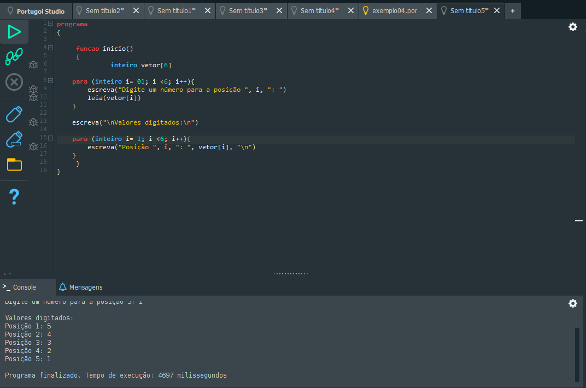
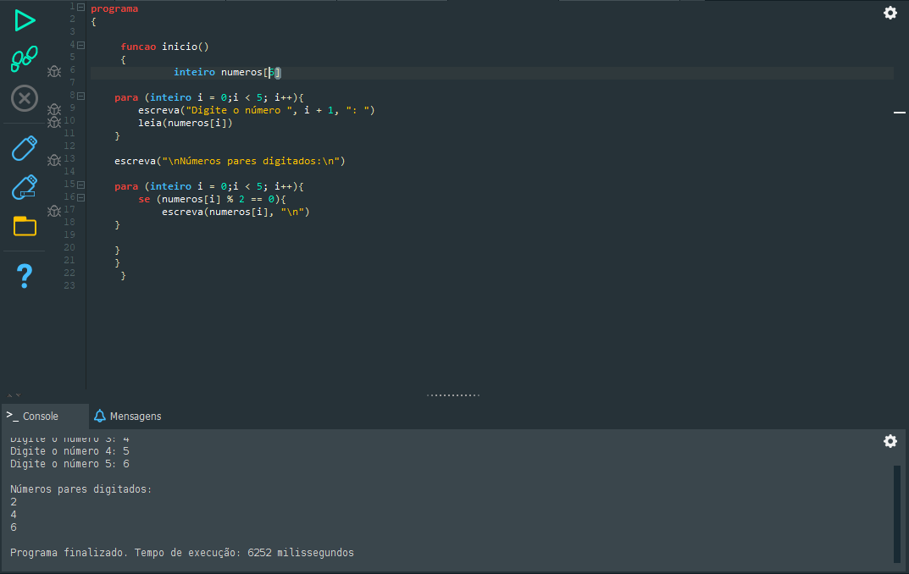
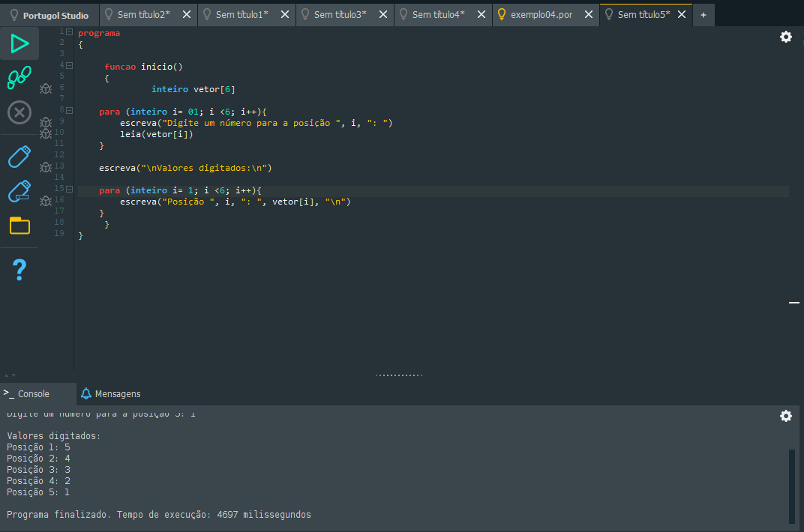
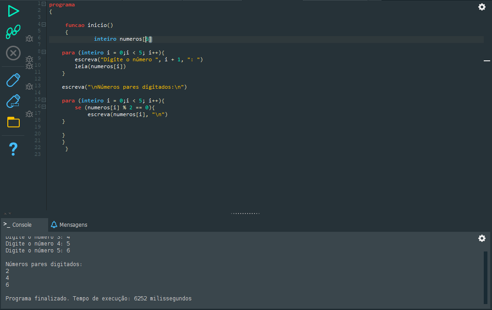

logica computacional
fluxograma
Um fluxograma é uma representação gráfica de um processo, sistema ou algoritmo, mostrando a sequência de etapas e o fluxo de informações ou ações por meio de símbolos padronizados conectados por setas. Ele é muito usado em administração, engenharia, programação e gestão de processos para facilitar a compreensão, análise e melhoria de um procedimento.
simbologia
Terminal (Elipse ou Retângulo com cantos arredondados): Indica início ou fim do processo.

oque é um algoritmo
Na lógica computacional, os algoritmos são sequências finitas e bem definidas de instruções lógicas, concebidas para resolver um problema específico ou executar uma tarefa.
A função principal de um algoritmo é fornecer um método passo a passo que o computador pode seguir para processar uma entrada de dados e produzir um resultado ou solução.
No dia a dia, um exemplo simples é uma receita culinária ou instruções para trocar um pneu. No mundo digital, exemplos de algoritmos incluem:
sistemas de recomendação em plataformas como spotify
algoritmo de pesquisa do google
oque é portugol
Portugol é uma linguagem de pseudocódigo — ou seja, não é uma linguagem de programação real, mas sim uma forma simplificada e parecida com o português usada para ensinar lógica de programação.
oque é portugol studio
Portugol Studio é um programa gratuito usado para aprender lógica de programação com a linguagem Portugol.
Ele permite escrever, executar e testar códigos em português de forma simples e visual, mostrando o que acontece passo a passo.
oque são variaveis
São espaços de memória que podem mudar de valor ao longo do tempo.
Podem receber novos valores durante a execução de um programa.
oque são constantes
São valores fixos, que não podem ser alterados depois de definidos.
Usadas quando o valor deve permanecer igual durante todo o programa (como π, limites, configurações).

Tipos de dados mais usados em algoritmos (Portugol), explicados de forma simples.
Booleano (lógico):
Armazena apenas dois valores: verdadeiro ou falso.
Usado em condições e decisões.
Caractere (caracter):
Armazena um único digito.
Inteiro:
Armazena números sem parte decimal.(inteiro)
Real:
Armazena números com parte decimal.
exemplos de programas em portugol utilizando funções
exemplos de programas em portugol utilizando vetores
 


